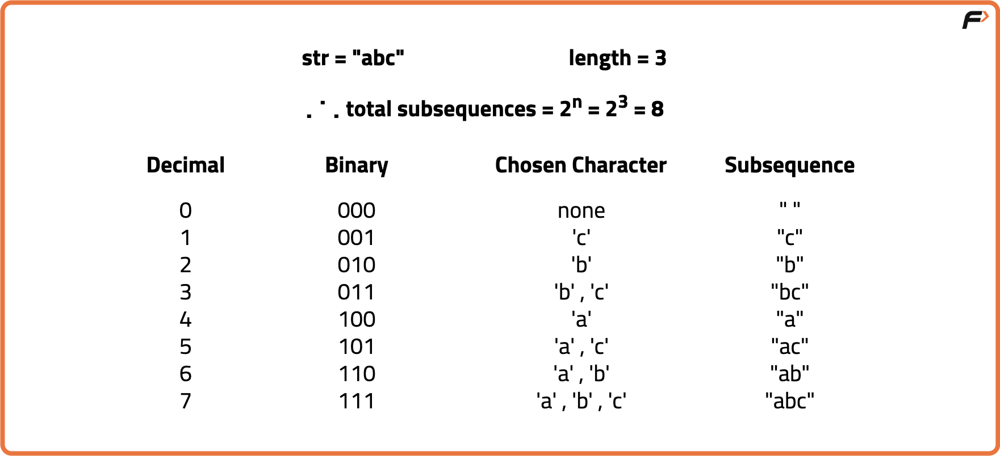
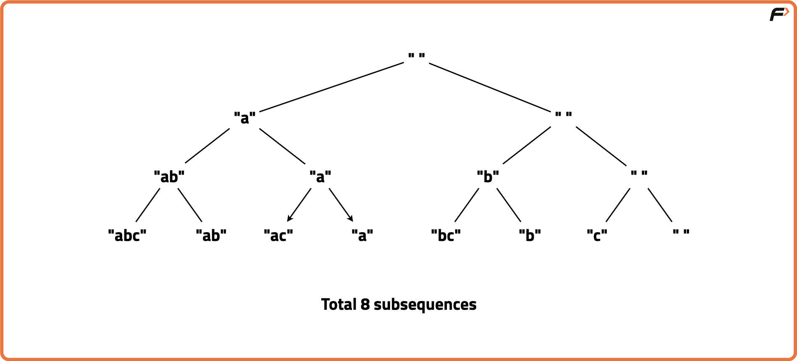

Power Set: Print all the possible subsequences of the String
Problem Description: Given a string, find all the possible subsequences of the string.
Examples
Input: str = "abc" Output: [a, ab, abc, ac, b, bc, c] Explanation: Given string has 7 subsequences. Input: str = "aa" Output: [a, a, aa] Explanation: Given string has 3 subsequences.
Disclaimer: It's highly recommend trying to solve it before looking at the solution.
Approach - 1
Algorithm
Each subsequence corresponds to a binary number where the bits represent whether to include (1) or exclude (0) a character at that position.
- There are 2^n subsequences for a string of length n.
- Iterate from 0 to 2^n - 1. For each number, check each bit.
- If the bit is set, include the corresponding character. Else, exclude it.
- Print the subsequence formed by the included characters.

Code
#include <bits/stdc++.h>
using namespace std;
// Solution class to generate all subsequences using bit manipulation
class Solution {
public:
// Function to return all subsequences of string s
vector<string> getSubsequences(string s) {
// Length of input string
int n = s.size();
// Total subsequences = 2^n
int total = 1 << n;
// Vector to store all subsequences
vector<string> subsequences;
// Iterate over all bit masks from 0 to 2^n - 1
for (int mask = 0; mask < total; mask++) {
// Temporary subsequence string
string subseq = "";
// Check each bit position in mask
for (int i = 0; i < n; i++) {
// If i-th bit of mask is set, include s[i]
if (mask & (1 << i)) {
subseq += s[i];
}
}
// Store the formed subsequence
subsequences.push_back(subseq);
}
// Return all generated subsequences
return subsequences;
}
};
int main() {
// Input string
string s = "abc";
// Create Solution object
Solution sol;
// Get all subsequences
vector<string> subsequences = sol.getSubsequences(s);
// Print all subsequences
for (auto &subseq : subsequences) {
cout << "\"" << subseq << "\"" << endl;
}
return 0;
}
Complexity Analysis
Time Complexity: O(n * 2^n), for each subsequence, we may check up to n bits to decide inclusion.Space Complexity: O(n * 2^n), space used to store all possible subsequences.
Approach - 2
Algorithm
Use recursion to decide for each character whether to include it or not in the current subsequence. This forms a binary decision tree exploring all combinations.
- Start with an empty subsequence. For each character, recursively make a decision.
- Either include it in the subsequence or exclude it from the subsequence.
- When you reach the end of the string, print the current subsequence.

Code
#include <bits/stdc++.h>
using namespace std;
// Solution class to generate all subsequences using recursion
class Solution {
public:
// Helper recursive function to generate subsequences
void helper(string &s, int index, string ¤t, vector<string> &result) {
// Base case: If index reaches string length, add current subsequence to result
if (index == s.size()) {
result.push_back(current);
return;
}
// Exclude current character and recurse
helper(s, index + 1, current, result);
// Include current character and recurse
current.push_back(s[index]);
helper(s, index + 1, current, result);
// Backtrack: remove last character before returning to previous call
current.pop_back();
}
// Function to return all subsequences of string s
vector<string> getSubsequences(string s) {
// Vector to store all subsequences
vector<string> result;
// Current subsequence being built
string current = "";
helper(s, 0, current, result);
return result;
}
};
int main() {
// Input string
string s = "abc";
// Create Solution object
Solution sol;
// Get all subsequences
vector<string> subsequences = sol.getSubsequences(s);
// Print all subsequences
for (auto &subseq : subsequences) {
cout << "\"" << subseq << "\"" << endl;
}
return 0;
}
Complexity Analysis
Time Complexity: O(n * 2^n), for each subsequence, we construct and print the entire subsequence.Space Complexity: O(n * 2^n), space used to store all possible subsequences.